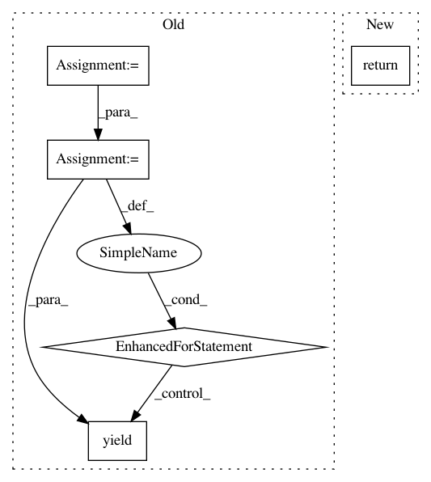

b5765ab044eb339889585608349d7cdc995ac685,src/fonduer/utils/data_model_utils/tabular.py,,get_sentence_ngrams,#,154
Before Change
:param n_max: The maximum n of the ngrams that should be returned
:param lower: If True, all ngrams will be returned in lower case
spans = _to_spans(mention)
for span in spans:
for ngram in get_left_ngrams(
span, window=100, attrib=attrib, n_min=n_min, n_max=n_max, lower=lower
):
yield ngram
for ngram in get_right_ngrams(
span, window=100, attrib=attrib, n_min=n_min, n_max=n_max, lower=lower
):
yield ngram
def get_neighbor_sentence_ngrams(
mention: Union[Candidate, Mention, TemporarySpanMention],
d: int = 1,
attrib: str = "words",
After Change
:param n_max: The maximum n of the ngrams that should be returned
:param lower: If True, all ngrams will be returned in lower case
return get_sentence_ngrams_in_textual(mention, attrib, n_min, n_max, lower)
@deprecation.deprecated(
deprecated_in="0.8.3",
In pattern: SUPERPATTERN
Frequency: 4
Non-data size: 5
Instances
Project Name: HazyResearch/fonduer
Commit Name: b5765ab044eb339889585608349d7cdc995ac685
Time: 2020-09-11
Author: hiromu.hota@hal.hitachi.com
File Name: src/fonduer/utils/data_model_utils/tabular.py
Class Name:
Method Name: get_sentence_ngrams
Project Name: HazyResearch/fonduer
Commit Name: b5765ab044eb339889585608349d7cdc995ac685
Time: 2020-09-11
Author: hiromu.hota@hal.hitachi.com
File Name: src/fonduer/utils/data_model_utils/tabular.py
Class Name:
Method Name: get_neighbor_sentence_ngrams
Project Name: nilmtk/nilmtk
Commit Name: f0622cc5c1d6fc5c81b588a9c365731188fb5cae
Time: 2014-12-12
Author: jack-list@xlk.org.uk
File Name: nilmtk/electric.py
Class Name: Electric
Method Name: power_series
Project Name: coala/coala-bears
Commit Name: 7f3fe6fda39332a380762c36ba800516f14a0694
Time: 2017-06-13
Author: rahul.jha945@gmail.com
File Name: bears/python/VultureBear.py
Class Name: VultureBear
Method Name: run